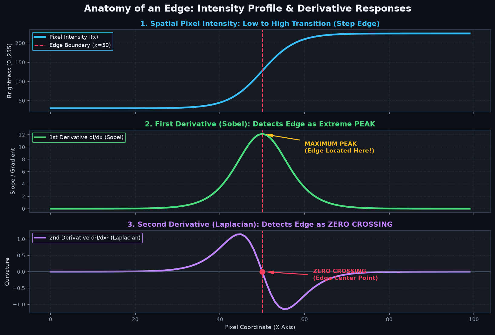
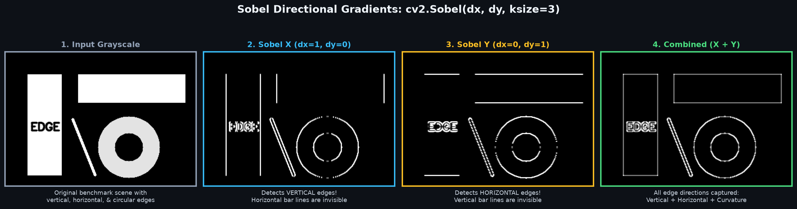
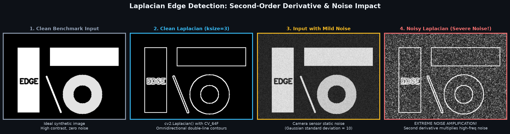
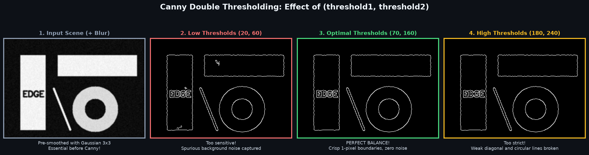
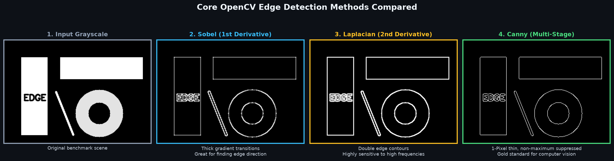

Discover how computers locate object boundaries and shape outlines: First-order directional Sobel gradients (Sobel X & Y), second-order isotropic Laplacian derivatives, and the gold-standard 5-stage Canny Edge Detector.
Ek digital image mein Edge us jagah ko kehte hain jahan pixel brightness ya color achanak aur tezi se change hota hai (sharp intensity transition).
Computer Vision mein edges ka bohot bada significance hai:
Mathematics ki nazar se edge ek mathematical function ka rate-of-change (derivative) hota hai:
Brightness ka slope measure karta hai. Jahan edge hoti hai, wahan slope ka Maximum Peak banta hai!
Slope ke change ka rate measure karta hai. Jahan edge ka exact center hota hai, wahan graph zero ko cross karta hai (Zero Crossing)!

Sobel ek gradient-based first-order edge detector hai jo horizontal aur vertical directions mein alag-alag brightness changes calculate karta hai:
dx=1, dy=0: Horizontal change → Yeh Vertical Edges ko highlight karta hai!dx=0, dy=1: Vertical change → Yeh Horizontal Edges ko highlight karta hai!import cv2
# Compute Sobel Gradients in float64 to preserve negative slopes!
sobel_x = cv2.Sobel(gray, ddepth=cv2.CV_64F, dx=1, dy=0, ksize=3)
sobel_y = cv2.Sobel(gray, ddepth=cv2.CV_64F, dx=0, dy=1, ksize=3)
# Convert signed float values back to 8-bit unsigned integer (0-255)
abs_x = cv2.convertScaleAbs(sobel_x)
abs_y = cv2.convertScaleAbs(sobel_y)
# Combine X and Y gradients into a single complete edge map
sobel_combined = cv2.addWeighted(abs_x, 0.5, abs_y, 0.5, 0)CV_8U rakh denge, to OpenCV sabhi negative slopes ko 0 (black) par clip kar dega aur aadhi boundaries gayab ho jayengi!ddepth=cv2.CV_64F use karein, aur baad mein cv2.convertScaleAbs() lagayein!

Jabki Sobel direction-specific hota hai (X alag, Y alag), Laplacian ek isotropic (all-direction) operator hai jo second-order derivative use karke sabhi directions ki boundaries ek saath highlight karta hai:
∇2f = ∂2f / ∂x2 + ∂2f / ∂y2
import cv2
# Apply Laplacian
lap = cv2.Laplacian(gray, ddepth=cv2.CV_64F, ksize=3)
abs_lap = cv2.convertScaleAbs(lap)
Sobel edges bohot thick aur blurry hote hain, aur Laplacian noisy hota hai. 1986 mein John F. Canny ne ek revolutionary 5-stage algorithm banaya jise aaj computer vision ka Gold Standard maana jata hai:
import cv2
# Pre-smooth image
blurred = cv2.GaussianBlur(gray, (3, 3), 0)
# Apply Canny Edge Detection
# threshold1 = minVal, threshold2 = maxVal
edges = cv2.Canny(blurred, threshold1=50, threshold2=150)
| Detector | Derivative Type | Edge Thickness | Noise Resistance | Best Use-Case |
|---|---|---|---|---|
| Sobel | 1st Order Gradient | Thick / Fuzzy | Moderate | Measuring edge angle/direction (e.g. Sobel X for lane detection). |
| Laplacian | 2nd Order Derivative | Double Edge Lines | Very Low (Poor) | Image sharpness testing, detecting rapid intensity curvature. |
| Canny | Multi-Stage (Sobel + NMS + Hysteresis) | 1-Pixel Thin | Very High (Best) | General object detection, contours, OCR, robotics, autonomous driving. |

import cv2
# Load image in grayscale
img = cv2.imread("scene.jpg", cv2.IMREAD_GRAYSCALE)
# 1. Compute horizontal and vertical gradients
sobel_x = cv2.Sobel(img, cv2.CV_64F, 1, 0, ksize=3)
sobel_y = cv2.Sobel(img, cv2.CV_64F, 0, 1, ksize=3)
# 2. Take absolute values and convert to uint8
abs_x = cv2.convertScaleAbs(sobel_x)
abs_y = cv2.convertScaleAbs(sobel_y)
# 3. Combine both directions
sobel_combined = cv2.addWeighted(abs_x, 0.5, abs_y, 0.5, 0)
cv2.imwrite("sobel_vertical_edges.png", abs_x)
cv2.imwrite("sobel_horizontal_edges.png", abs_y)
cv2.imwrite("sobel_full.png", sobel_combined)import cv2
img = cv2.imread("scene.jpg", cv2.IMREAD_GRAYSCALE)
# Essential: Blur before Laplacian to suppress noise!
blurred = cv2.GaussianBlur(img, (3, 3), 0)
# Compute Laplacian
lap = cv2.Laplacian(blurred, cv2.CV_64F, ksize=3)
lap_clean = cv2.convertScaleAbs(lap)
cv2.imwrite("laplacian_edges.png", lap_clean)import cv2
# 1. Read input
image = cv2.imread("road_lane.jpg", cv2.IMREAD_GRAYSCALE)
# 2. Mild 3x3 Gaussian smoothing
smoothed = cv2.GaussianBlur(image, (3, 3), 0)
# 3. Run Canny (standard 1:2 or 1:3 ratio for thresholds)
canny_edges = cv2.Canny(smoothed, threshold1=50, threshold2=150)
cv2.imwrite("road_edges.png", canny_edges)import cv2
import numpy as np
def auto_canny(image, sigma=0.33):
# Compute median pixel intensity
v = np.median(image)
# Apply automatic threshold formula
lower = int(max(0, (1.0 - sigma) * v))
upper = int(min(255, (1.0 + sigma) * v))
return cv2.Canny(image, lower, upper)
# Apply auto canny directly
auto_edges = auto_canny(image)
cv2.imwrite("auto_canny.png", auto_edges)sobel_x = cv2.Sobel(gray, cv2.CV_8U, 1, 0)cv2.CV_64F use karein aur baad mein cv2.convertScaleAbs() lagayein.
dx=1 horizontal line dega.dx=1 X-axis ke along difference dekhta hai (left to right). Jab aap left se right move karte hain to Vertical Line hit hoti hai! Isliye dx=1 vertical boundaries deta hai.
cv2.GaussianBlur((3, 3), 0) lagayein!
cv2.Sobel() with dx=1, dy=0 detects vertical edges, and dx=0, dy=1 detects horizontal edges. Requires cv2.CV_64F.cv2.Laplacian() isotropic edge detector based on zero-crossings. Highly sensitive to noise.cv2.Sobel(gray, cv2.CV_64F, 1, 0) run karne par kaunsi edges highlight hongi?dx=1, dy=0 ka matlab hai X-axis (horizontal) ke along intensity change measure karna. Left se right move karte waqt khadi (vertical) boundaries hit hoti hain!
ddepth=cv2.CV_64F pass karna kyun zaroori hai?Ab jab humne Canny aur Sobel se crisp 1-pixel edge maps nikaalna seekh liya hai, agle topic mein hum seekhenge ki kaise cv2.findContours() in edges ko connected vector curves mein convert karta hai taaki hum objects ki area, perimeter, center of mass, bounding boxes, aur geometric shapes (circles, triangles, rectangles) detect kar sakein!